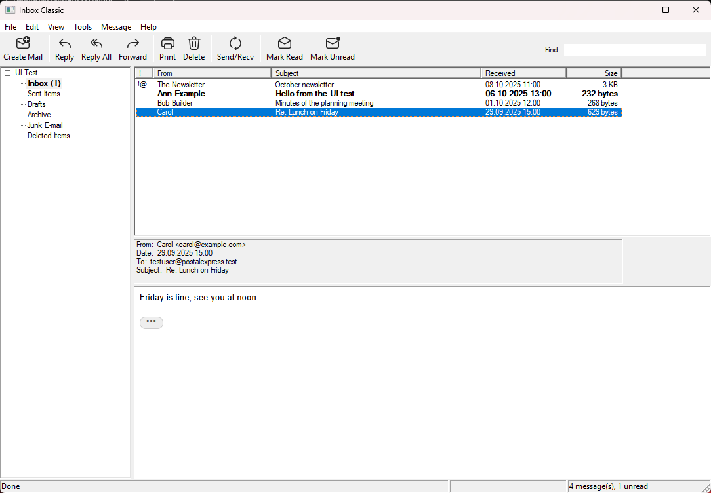
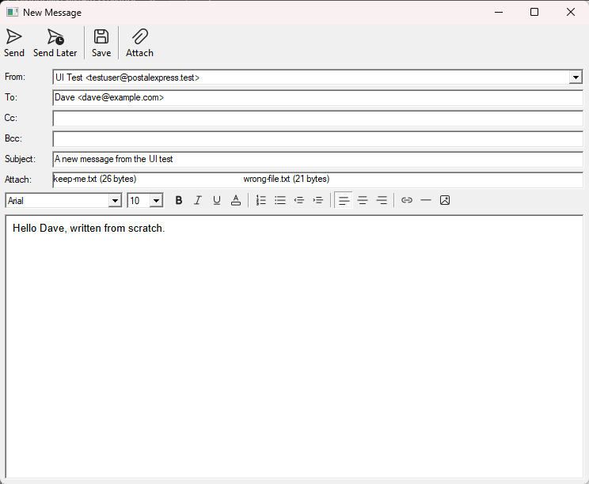
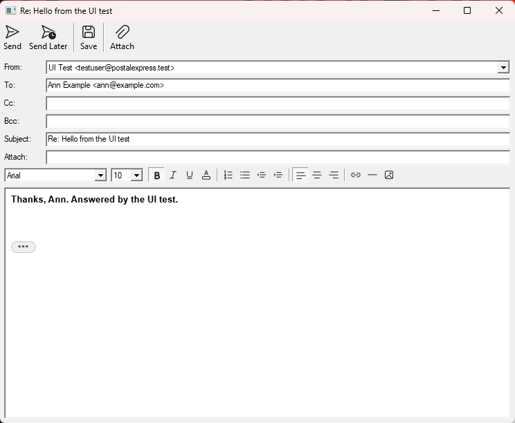

Everything a mail program should do, and nothing else
No feeds, no assistants, no ads. A fast, small program that reads and writes your mail, with the shortcuts and the layout you already know.
Any IMAP account
Type your address and password; the servers are found for you. Gmail and Outlook.com can sign in through the browser.
Reads offline
A copy of your mail stays on your computer, so what was downloaded opens instantly, even without a connection.
Replies without clutter
Quoted history and forwarded mail fold away behind a small button, when you read and when you reply.
A real editor
Bold, lists, colors, links and pictures in the compose window, sent as HTML with a plain text part.
Drafts and an Outbox
Save a message to finish later. If sending fails, it waits in the Outbox and goes with the next Send/Recv.
Find, folders, print
Search the folder as you type, move and flag mail, manage folders, print, and save or import .eml files.
Read in peace
HTML mail keeps its layout but loses its scripts and trackers. Pictures from the internet stay blocked until you ask for them.
Long reply chains fold away, so you see what the sender actually wrote.


Write the way you always have
From shows which account sends the message, and lets you pick another. Attach files with the button or by dragging them in.
Ctrl+Enter sends, Ctrl+S saves the draft.
Answer with the original folded
Your reply starts at the top. The original message waits behind the three dots and is sent along, unless you open it and trim it.

Safe by design
Email is the most common way into a computer. Inbox Classic is built so a hostile message has as little to work with as possible.
- Parsed in a memory-safe coreEverything a server or sender writes is read by a Rust core; the Windows interface only shows what it has checked.
- No scripts in your mailMessages are sanitized and shown with scripts, forms, frames and remote requests turned off.
- Encryption is not optionalServers are only picked with TLS, certificates are checked against Windows, and there is no "accept any certificate" switch.
- Passwords in WindowsPasswords and sign-in tokens are kept in the Windows Credential Manager, not in a file.
- Lookups nobody can tamper withServer settings are found over DNS-over-HTTPS, so nobody on your network can hand out other servers.
- Nothing phones homeNo analytics, no accounts with us. Inbox Classic talks to your mail servers and nobody else.
Coming to Windows 11
Inbox Classic is in development by Postal Systems, the makers of Nodemailer and EmailEngine. A signed installer that needs no admin rights will be published here.